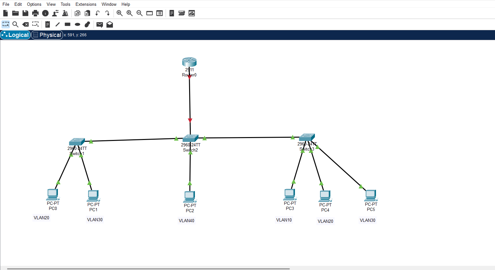
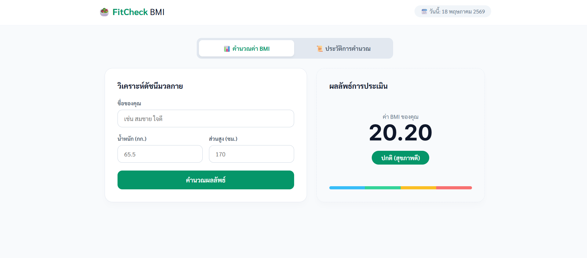
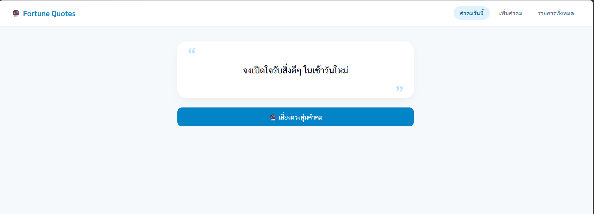
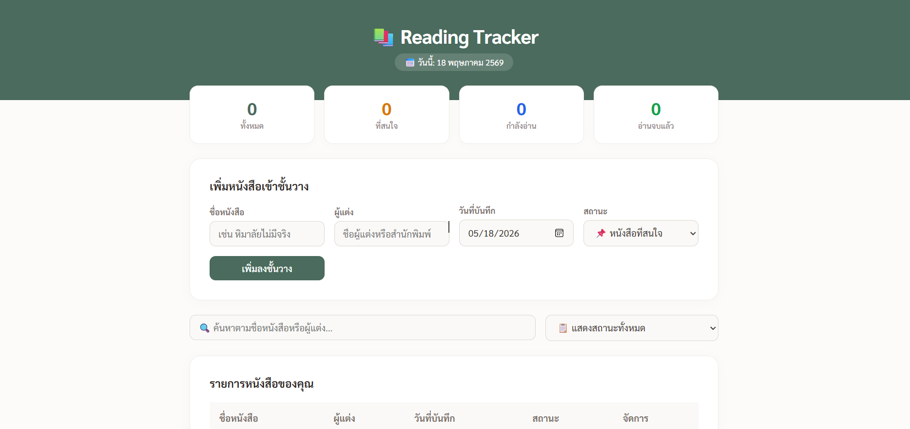
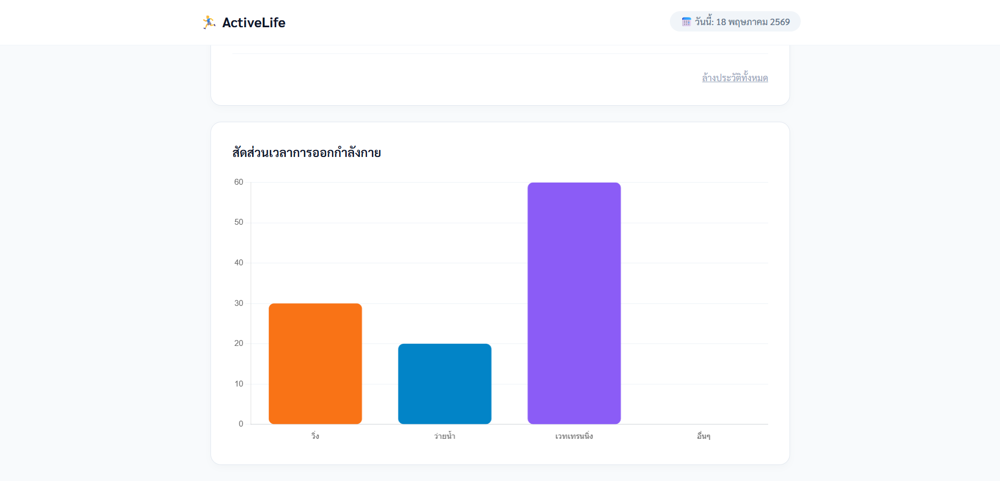
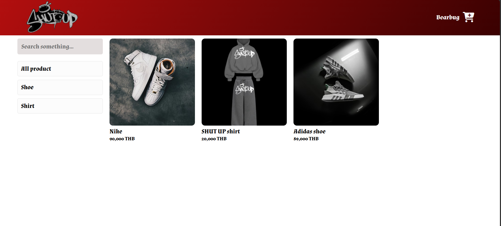

Network Topology & OSPF Study
ออกแบบโครงสร้างเครือข่ายจำลองผ่าน Cisco Packet Tracer เพื่อศึกษาพฤติกรรมของ Link State Routing และการประยุกต์ใช้ Dijkstra’s algorithm ในการหาเส้นทางข้อมูล

BMI Calculator
เว็บแอปพลิเคชันคำนวณและประเมินดัชนีมวลกาย ออกแบบในสไตล์ Clean Wellness UI โดยยกระดับ UX ด้วย Tab Navigation System แบ่งหน้าทำงานระหว่างฟอร์มคำนวณและหน้าประวัติการบันทึกข้อมูลอย่างเป็นสัดส่วน มีระบบ Visual Gauge แถบสีจำแนกเกณฑ์สุขภาพ และระบบ Advanced Filtering กรองค้นหาประวัติตามวันที่ได้อย่างแม่นยำด้วยการควบคุม DOM และ LocalStorage ผ่าน Vanilla JavaScript

Random Quote Generator
เว็บแอปพลิเคชันสำหรับสุ่มคำคมสร้างแรงบันดาลใจในทุกๆ เช้า พัฒนาในรูปแบบ Single Page Application (SPA) ด้วย Vanilla JavaScript โดยแบ่งการทำงานออกเป็น 3 หน้าต่างอย่างเป็นสัดส่วน (สุ่มคำคม, เพิ่มคำคมใหม่, และคลังคำคม) พร้อมระบบค้นหาข้อมูล และสไตล์การออกแบบที่เน้นความมินิมอล สบายตา ควบคุมข้อมูลทั้งหมดแบบ Real-time ผ่าน LocalStorage

Reading Tracker
เว็บแอปพลิเคชันสำหรับนักอ่านที่ช่วยบันทึก ติดตาม และคัดกรองรายชื่อหนังสืออย่างเป็นระบบ ออกแบบ UI ในโทนสี Cozy Earth Tone ที่ดูสบายตา มาพร้อมระบบ Dashboard Counters สรุปสถิติจำนวนหนังสือแยกตามสถานะแบบ Real-time และฟีเจอร์การค้นหา/คัดกรองที่ยืดหยุ่น พัฒนาด้วยพลังของ Vanilla JavaScript ที่จัดการ State ได้อย่างปลอดภัย ไร้รอยต่อ และจัดเก็บข้อมูลอย่างถาวรผ่าน LocalStorage

Workout Tracker
เว็บแอปพลิเคชันสำหรับบันทึกและติดตามกิจกรรมการออกกำลังกายรายวัน ออกแบบมาในสไตล์ Sporty Clean UI ที่ใช้งานง่าย มาพร้อมระบบคำนวณสถิติเวลาสะสมและ Dynamic Chart แสดงสัดส่วนการฝึกซ้อมแยกตามประเภทกีฬาแบบเรียลไทม์ผ่าน Chart.js จัดการข้อมูลฝั่ง Client-side ได้อย่างแม่นยำและเก็บข้อมูลถาวรด้วย LocalStorage

Clothing Sales Website
โปรแกรมและแพลตฟอร์มสำหรับขายเสื้อผ้าออนไลน์แบบครบวงจร